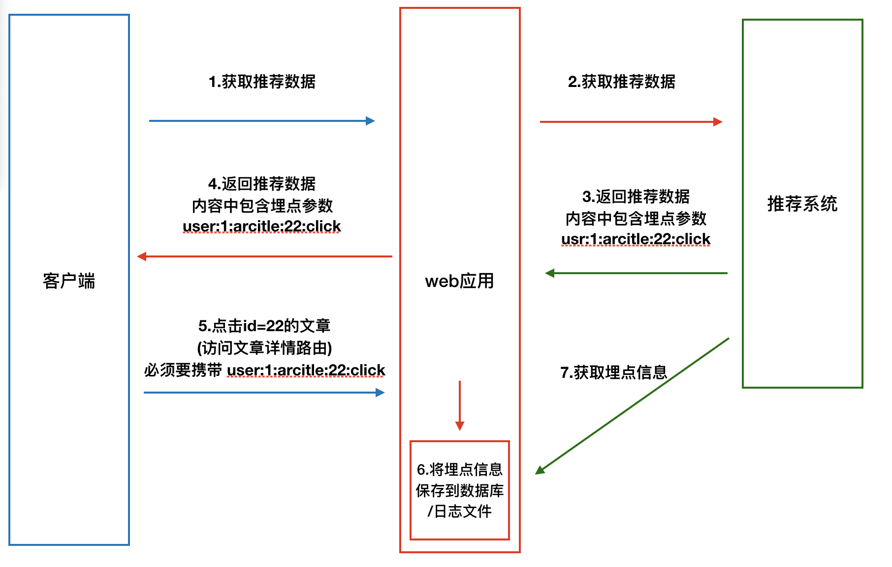

推荐系统接口定义
[TOC]
1. web系统和推荐系统的交互流程
- gRPC使用流程
- 根据proto3协议对应的
接口定义语言来描述接口需求
- 用proto3语法写一个proto文件 → 这是本章节要完成的步骤
- 使用gRPC的编译器生成对应平台的客户端和服务端代码
- 用命令行生成python代码 → 这也是本章节要完成的步骤
- 实现客户端和服务端的具体逻辑
- 完成客户端和服务端的代码

2. 接口原型
这里的接口是指的 rpc远程调用双方约定的函数名，web系统调用推荐系统的函数：双方需要事先约定好函数名，函数所需要的参数，函数需要返回的响应数据。一般都是负责推荐系统的程序员来指定。
接口名称： user_recommend
web系统发送的参数：
UserRequest : { user_id # 用户id str类型 channel_id # 频道id int类型 article_num # 推荐的文章数量 向推荐系统索要推荐文章的数量 int类型 time_stamp # 推荐的时间戳 单位秒 int类型 }
参数说明
每个用户在各自的首页中，有自己关注的频道，所以需要频道id
每次推荐的文章是不一样的，用时间戳和每次推荐的文章关联起来，后期就可以实现：
- 获取历史推荐记录
- 配合埋点提升对用户推荐的精准度
- 埋点 将用户行为数据（用户 用户具体行为 文章标识等信息）发送给后端存入相应的数据库，做长期数据沉淀，推荐系统就能够根据这些沉淀的用户行为数据，做出更精准的推荐，提高用户黏性。
推荐系统返回的数据：
ArticleResponse : { expousre # 曝光埋点数据 str类型 time_stamp # 推荐的时间戳 单位秒 int类型 recommends : [ # 推荐结果，包含多条数据，每条数据都有2个数据，其中一个又包含了4条数据 { article_id # 文章id int类型 track : { # 关于文章的埋点数据，包含以下4个数据 click # 用户点击行为的埋点参数 str类型 collect # 用户收藏的埋点参数 str类型 share # 用户分享的埋点参数 str类型 read # 用户进入文章详情的埋点参数 str类型 }, {}, {}, ... ] }
3. 使用Protobuf 定义的接口如下
使用protobuf定义的接口文件以proto作为文件后缀名
- 在
toutiao-backend/common/rpc目录下新建reco.proto文件，完成声明代码如下：// 1. 声明使用proto3语法 syntax = "proto3"; // 3. 声明请求参数UserRequest对象的数据结构 message UserRequest { string user_id = 1; //# 用户id str类型 int32 channel_id = 2; //# 频道id int类型 int32 article_num = 3; //# 推荐的文章数量 向推荐系统索要推荐文章的数量 int类型 int64 time_stamp = 4; //# 推荐的时间戳 单位秒 int类型 // 这里的1234 表示序号，在传输时只会出现序号，不会出现user_id，省空间 // 除了repeated类型（对应python list）序号从0开始，其他都是从1开始 } // 6. 声明ArticleResponse.recommends.track中的数据结构 message Track { string click = 1; // # 用户点击行为的埋点参数 str类型 string collect = 2; // # 用户收藏的埋点参数 str类型 string share = 3; // # 用户分享的埋点参数 str类型 string read = 4; // # 用户进入文章详情的埋点参数 str类型 } // 5. 声明ArticleResponse.recommends中的数据结构 message Article { int64 article_id = 1; // # 文章id int类型 Track track = 2; // # 关于文章的埋点数据，只是普通嵌套，只需要声明指向的数据结构，无需声明proto原生类型 } // 4. 声明返回的数据对象ArticleResponse的第一层数据 message ArticleResponse { string expousre = 1; // # 曝光埋点数据 str类型 int64 time_stamp = 2; // # 推荐的时间戳 单位秒 int类型 repeated Article recommends = 3; // repeated类型 对应python list // Article 指向 说明recommends中数据结构的声明 } // 2. 声明 调用的函数名 和 请求参数名 以及 返回数据响应名 service UserRecommend { // 声明 使用名为 UserRecommend 的服务，对应python就是类名 rpc user_recommend(UserRequest) returns(ArticleResponse) {} // 最后有个 {} 千万别忘了 // rpc 方法名(请求参数对象) returns(返回的数据对象) }番外：pycharm识别proto文件设置
- pycahrm中点击-->
settings...-->plugins，在marketplace中搜索portobuf，选择谷歌官方的protobuf support，点击install；安装成功后重启pycharm
4. 代码生成
在安装过
grpcio和grpcio-tools两个python模块的前提下，进入proto格式文件所在的路径，命令行输入命令，进行编译；编译结束后会自动生成代码注意：
可以ssh连接进入远程服务器，执行编译命令，注意使用虚拟环境
建议先把本地代码同步到远程服务器上之后，再执行编译命令
如果是在远程服务器的终端进行的编译，注意要把远程服务器的代码同步到本地
代码生成的编译命令
python -m grpc_tools.protoc -I. --python_out=. --grpc_python_out=. reco.proto
- 编译命令说明
-I表示搜索proto文件中被导入文件的目录，.点表示当前路径--python_out表示保存生成Python文件的目录，生成的文件中包含接口定义中的数据类型，.点表示当前路径--grpc_python_out表示保存生成Python文件的目录，生成的文件中包含接口定义中的服务类型，.点表示当前路径在toutiao-backend/common/rpc目录下执行上述命令，会自动生成如下两个rpc调用辅助代码模块：
- reco_pb2.py 保存根据接口定义文件中的数据类型生成的python类
- reco_pb2_grpc.py 保存根据接口定义文件中的服务方法类型生成的python调用RPC方法